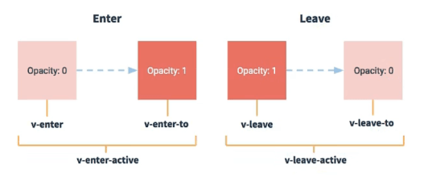

Vue（脚手架）
脚手架文件结构
├── node_modules
├── public
│ ├── favicon.ico: 页签图标
│ └── index.html: 主页面
├── src
│ ├── assets: 存放静态资源
│ │ └── logo.png
│ │── component: 存放组件
│ │ └── HelloWorld.vue
│ │── App.vue: 汇总所有组件
│ │── main.js: 入口文件
├── .gitignore: git版本管制忽略的配置
├── babel.config.js: babel的配置文件
├── package.json: 应用包配置文件
├── README.md: 应用描述文件
├── package-lock.json：包版本控制文件
关于不同版本的Vue
- vue.js与vue.runtime.xxx.js的区别：
- vue.js是完整版的Vue，包含：核心功能 + 模板解析器。
- vue.runtime.xxx.js是运行版的Vue，只包含：核心功能；没有模板解析器。
- 因为vue.runtime.xxx.js没有模板解析器，所以不能使用template这个配置项，需要使用render函数接收到的createElement函数去指定具体内容。
vue.config.js配置文件
- 使用vue inspect > output.js可以查看到Vue脚手架的默认配置。
- 使用vue.config.js可以对脚手架进行个性化定制，详情见：https://cli.vuejs.org/zh
ref属性
- 被用来给元素或子组件注册引用信息（id的替代者）
- 应用在html标签上获取的是真实DOM元素，应用在组件标签上是组件实例对象（vc）
- 使用方式：
- 打标识：
<h1 ref="xxx">.....</h1>或<School ref="xxx"></School> - 获取：
this.$refs.xxx
props配置项
-
功能：让组件接收外部传过来的数据
-
传递数据：
<Demo name="xxx"/> -
接收数据：
-
第一种方式（只接收）：
props:['name'] -
第二种方式（限制类型）：
props:{name:String} -
第三种方式（限制类型、限制必要性、指定默认值）：
备注：props是只读的，Vue底层会监测你对props的修改，如果进行了修改，就会发出警告，若业务需求确实需要修改，那么请复制props的内容到data中一份，然后去修改data中的数据。
mixin(混入)
-
功能：可以把多个组件共用的配置提取成一个混入对象
-
使用方式：
第一步定义混合：
第二步使用混入：
全局混入：Vue.mixin(xxx)
局部混入：mixins:['xxx']
插件
-
功能：用于增强Vue
-
本质：包含install方法的一个对象，install的第一个参数是Vue，第二个以后的参数是插件使用者传递的数据。
-
定义插件：
对象.install = function (Vue, options) {
// 1. 添加全局过滤器
Vue.filter(....)
// 2. 添加全局指令
Vue.directive(....)
// 3. 配置全局混入(合)
Vue.mixin(....)
// 4. 添加实例方法
Vue.prototype.$myMethod = function () {...}
Vue.prototype.$myProperty = xxxx
}
- 使用插件：
Vue.use()
scoped样式
- 作用：让样式在局部生效，防止冲突。
- 写法：
<style scoped>
总结TodoList案例
- 组件化编码流程：
(1).拆分静态组件：组件要按照功能点拆分，命名不要与html元素冲突。
(2).实现动态组件：考虑好数据的存放位置，数据是一个组件在用，还是一些组件在用：
1).一个组件在用：放在组件自身即可。
2). 一些组件在用：放在他们共同的父组件上（状态提升）。
(3).实现交互：从绑定事件开始。
- props适用于：
(1).父组件 ==> 子组件 通信
(2).子组件 ==> 父组件 通信（要求父先给子一个函数）
-
使用v-model时要切记：v-model绑定的值不能是props传过来的值，因为props是不可以修改的！
-
props传过来的若是对象类型的值，修改对象中的属性时Vue不会报错，但不推荐这样做。
webStorage
-
存储内容大小一般支持5MB左右（不同浏览器可能还不一样）
-
浏览器端通过 Window.sessionStorage 和 Window.localStorage 属性来实现本地存储机制。
-
相关API：
-
xxxxxStorage.setItem('key', 'value');该方法接受一个键和值作为参数，会把键值对添加到存储中，如果键名存在，则更新其对应的值。 -
xxxxxStorage.getItem('person'); 该方法接受一个键名作为参数，返回键名对应的值。
-
xxxxxStorage.removeItem('key'); 该方法接受一个键名作为参数，并把该键名从存储中删除。
-
xxxxxStorage.clear() 该方法会清空存储中的所有数据。
-
备注：
-
SessionStorage存储的内容会随着浏览器窗口关闭而消失。
- LocalStorage存储的内容，需要手动清除才会消失。
xxxxxStorage.getItem(xxx)如果xxx对应的value获取不到，那么getItem的返回值是null。JSON.parse(null)的结果依然是null。
组件的自定义事件
-
一种组件间通信的方式，适用于：子组件 ===> 父组件
-
使用场景：A是父组件，B是子组件，B想给A传数据，那么就要在A中给B绑定自定义事件（事件的回调在A中）。
-
绑定自定义事件：
-
第一种方式，在父组件中：
<Demo @atguigu="test"/>或<Demo v-on:atguigu="test"/> -
第二种方式，在父组件中：
-
若想让自定义事件只能触发一次，可以使用
once修饰符，或$once方法。 -
触发自定义事件：
this.$emit('atguigu',数据) -
解绑自定义事件
this.$off('atguigu') -
组件上也可以绑定原生DOM事件，需要使用
native修饰符。 -
注意：通过
this.$refs.xxx.$on('atguigu',回调)绑定自定义事件时，回调要么配置在methods中，要么用箭头函数，否则this指向会出问题！
全局事件总线（GlobalEventBus）
-
一种组件间通信的方式，适用于任意组件间通信。
-
安装全局事件总线：
-
使用事件总线：
-
接收数据：A组件想接收数据，则在A组件中给$bus绑定自定义事件，事件的回调留在A组件自身。
-
提供数据：
this.$bus.$emit('xxxx',数据) -
最好在beforeDestroy钩子中，用$off去解绑当前组件所用到的事件。
消息订阅与发布（pubsub）
-
一种组件间通信的方式，适用于任意组件间通信。
-
使用步骤：
-
安装pubsub：
npm i pubsub-js -
引入:
import pubsub from 'pubsub-js' -
接收数据：A组件想接收数据，则在A组件中订阅消息，订阅的回调留在A组件自身。
-
提供数据：
pubsub.publish('xxx',数据) -
最好在beforeDestroy钩子中，用
PubSub.unsubscribe(pid)去取消订阅。
nextTick
- 语法：
this.$nextTick(回调函数) - 作用：在下一次 DOM 更新结束后执行其指定的回调。
- 什么时候用：当改变数据后，要基于更新后的新DOM进行某些操作时，要在nextTick所指定的回调函数中执行。
Vue封装的过度与动画
-
作用：在插入、更新或移除 DOM元素时，在合适的时候给元素添加样式类名。
-
图示：
-
写法：
-
准备好样式：
- 元素进入的样式：
- v-enter：进入的起点
- v-enter-active：进入过程中
- v-enter-to：进入的终点
- 元素离开的样式：
- v-leave：离开的起点
- v-leave-active：离开过程中
- v-leave-to：离开的终点
- 元素进入的样式：
-
使用
<transition>包裹要过度的元素，并配置name属性： -
备注：若有多个元素需要过度，则需要使用：
<transition-group>，且每个元素都要指定key值。
vue脚手架配置代理
方法一
在vue.config.js中添加如下配置：
说明：
- 优点：配置简单，请求资源时直接发给前端（8080）即可。
- 缺点：不能配置多个代理，不能灵活的控制请求是否走代理。
- 工作方式：若按照上述配置代理，当请求了前端不存在的资源时，那么该请求会转发给服务器 （优先匹配前端资源）
方法二
编写vue.config.js配置具体代理规则：
module.exports = {
devServer: {
proxy: {
'/api1': {// 匹配所有以 '/api1'开头的请求路径
target: 'http://localhost:5000',// 代理目标的基础路径
changeOrigin: true,
pathRewrite: {'^/api1': ''}
},
'/api2': {// 匹配所有以 '/api2'开头的请求路径
target: 'http://localhost:5001',// 代理目标的基础路径
changeOrigin: true,
pathRewrite: {'^/api2': ''}
}
}
}
}
/*
changeOrigin设置为true时，服务器收到的请求头中的host为：localhost:5000
changeOrigin设置为false时，服务器收到的请求头中的host为：localhost:8080
changeOrigin默认值为true
*/
说明：
- 优点：可以配置多个代理，且可以灵活的控制请求是否走代理。
- 缺点：配置略微繁琐，请求资源时必须加前缀。
插槽
-
作用：让父组件可以向子组件指定位置插入html结构，也是一种组件间通信的方式，适用于 父组件 ===> 子组件 。
-
分类：默认插槽、具名插槽、作用域插槽
-
使用方式：
-
默认插槽：
-
具名插槽：
-
作用域插槽：
-
理解：数据在组件的自身，但根据数据生成的结构需要组件的使用者来决定。（games数据在Category组件中，但使用数据所遍历出来的结构由App组件决定）
-
具体编码：
父组件中： <Category> <template scope="scopeData"> <!-- 生成的是ul列表 --> <ul> <li v-for="g in scopeData.games" :key="g">{{g}}</li> </ul> </template> </Category> <Category> <template slot-scope="scopeData"> <!-- 生成的是h4标题 --> <h4 v-for="g in scopeData.games" :key="g">{{g}}</h4> </template> </Category> 子组件中： <template> <div> <slot :games="games"></slot> </div> </template> <script> export default { name:'Category', props:['title'], //数据在子组件自身 data() { return { games:['红色警戒','穿越火线','劲舞团','超级玛丽'] } }, } </script>
-
Vuex
1.概念
在Vue中实现集中式状态（数据）管理的一个Vue插件，对vue应用中多个组件的共享状态进行集中式的管理（读/写），也是一种组件间通信的方式，且适用于任意组件间通信。
2.何时使用？
多个组件需要共享数据时
3.搭建vuex环境
- 创建文件：
src/store/index.js
//引入Vue核心库
import Vue from 'vue'
//引入Vuex
import Vuex from 'vuex'
//应用Vuex插件
Vue.use(Vuex)
//准备actions对象——响应组件中用户的动作
const actions = {}
//准备mutations对象——修改state中的数据
const mutations = {}
//准备state对象——保存具体的数据
const state = {}
//创建并暴露store
export default new Vuex.Store({
actions,
mutations,
state
})
- 在
main.js中创建vm时传入store配置项
......
//引入store
import store from './store'
......
//创建vm
new Vue({
el:'#app',
render: h => h(App),
store
})
4.基本使用
- 初始化数据、配置
actions、配置mutations，操作文件store.js
//引入Vue核心库
import Vue from 'vue'
//引入Vuex
import Vuex from 'vuex'
//引用Vuex
Vue.use(Vuex)
const actions = {
//响应组件中加的动作
jia(context,value){
// console.log('actions中的jia被调用了',miniStore,value)
context.commit('JIA',value)
},
}
const mutations = {
//执行加
JIA(state,value){
// console.log('mutations中的JIA被调用了',state,value)
state.sum += value
}
}
//初始化数据
const state = {
sum:0
}
//创建并暴露store
export default new Vuex.Store({
actions,
mutations,
state,
})
-
组件中读取vuex中的数据：
$store.state.sum -
组件中修改vuex中的数据：
$store.dispatch('action中的方法名',数据)或$store.commit('mutations中的方法名',数据)
备注：若没有网络请求或其他业务逻辑，组件中也可以越过actions，即不写
dispatch，直接编写commit
5.getters的使用
-
概念：当state中的数据需要经过加工后再使用时，可以使用getters加工。
-
在
store.js中追加getters配置
......
const getters = {
bigSum(state){
return state.sum * 10
}
}
//创建并暴露store
export default new Vuex.Store({
......
getters
})
- 组件中读取数据：
$store.getters.bigSum
6.四个map方法的使用
- mapState方法：用于帮助我们映射
state中的数据为计算属性
computed: {
//借助mapState生成计算属性：sum、school、subject（对象写法）
...mapState({sum:'sum',school:'school',subject:'subject'}),
//借助mapState生成计算属性：sum、school、subject（数组写法）
...mapState(['sum','school','subject']),
},
- mapGetters方法：用于帮助我们映射
getters中的数据为计算属性
computed: {
//借助mapGetters生成计算属性：bigSum（对象写法）
...mapGetters({bigSum:'bigSum'}),
//借助mapGetters生成计算属性：bigSum（数组写法）
...mapGetters(['bigSum'])
},
- mapActions方法：用于帮助我们生成与
actions对话的方法，即：包含$store.dispatch(xxx)的函数
methods:{
//靠mapActions生成：incrementOdd、incrementWait（对象形式）
...mapActions({incrementOdd:'jiaOdd',incrementWait:'jiaWait'})
//靠mapActions生成：incrementOdd、incrementWait（数组形式）
...mapActions(['jiaOdd','jiaWait'])
}
- mapMutations方法：用于帮助我们生成与
mutations对话的方法，即：包含$store.commit(xxx)的函数
methods:{
//靠mapActions生成：increment、decrement（对象形式）
...mapMutations({increment:'JIA',decrement:'JIAN'}),
//靠mapMutations生成：JIA、JIAN（对象形式）
...mapMutations(['JIA','JIAN']),
}
备注：mapActions与mapMutations使用时，若需要传递参数需要：在模板中绑定事件时传递好参数，否则参数是事件对象。
7.模块化+命名空间
-
目的：让代码更好维护，让多种数据分类更加明确。
-
修改
store.js
const countAbout = {
namespaced:true,//开启命名空间
state:{x:1},
mutations: { ... },
actions: { ... },
getters: {
bigSum(state){
return state.sum * 10
}
}
}
const personAbout = {
namespaced:true,//开启命名空间
state:{ ... },
mutations: { ... },
actions: { ... }
}
const store = new Vuex.Store({
modules: {
countAbout,
personAbout
}
})
- 开启命名空间后，组件中读取state数据：
//方式一：自己直接读取
this.$store.state.personAbout.list
//方式二：借助mapState读取：
...mapState('countAbout',['sum','school','subject']),
- 开启命名空间后，组件中读取getters数据：
//方式一：自己直接读取
this.$store.getters['personAbout/firstPersonName']
//方式二：借助mapGetters读取：
...mapGetters('countAbout',['bigSum'])
- 开启命名空间后，组件中调用dispatch
//方式一：自己直接dispatch
this.$store.dispatch('personAbout/addPersonWang',person)
//方式二：借助mapActions：
...mapActions('countAbout',{incrementOdd:'jiaOdd',incrementWait:'jiaWait'})
- 开启命名空间后，组件中调用commit
//方式一：自己直接commit
this.$store.commit('personAbout/ADD_PERSON',person)
//方式二：借助mapMutations：
...mapMutations('countAbout',{increment:'JIA',decrement:'JIAN'}),
路由
- 理解： 一个路由（route）就是一组映射关系（key - value），多个路由需要路由器（router）进行管理。
- 前端路由：key是路径，value是组件。
1.基本使用
-
安装vue-router，命令：
npm i vue-router -
应用插件：
Vue.use(VueRouter) -
编写router配置项:
//引入VueRouter
import VueRouter from 'vue-router'
//引入Luyou 组件
import About from '../components/About'
import Home from '../components/Home'
//创建router实例对象，去管理一组一组的路由规则
const router = new VueRouter({
routes:[
{
path:'/about',
component:About
},
{
path:'/home',
component:Home
}
]
})
//暴露router
export default router
- 实现切换（active-class可配置高亮样式）
- 指定展示位置
2.几个注意点
- 路由组件通常存放在
pages文件夹，一般组件通常存放在components文件夹。 - 通过切换，“隐藏”了的路由组件，默认是被销毁掉的，需要的时候再去挂载。
- 每个组件都有自己的
$route属性，里面存储着自己的路由信息。 - 整个应用只有一个router，可以通过组件的
$router属性获取到。
3.多级路由（多级路由）
- 配置路由规则，使用children配置项：
routes:[
{
path:'/about',
component:About,
},
{
path:'/home',
component:Home,
children:[ //通过children配置子级路由
{
path:'news', //此处一定不要写：/news
component:News
},
{
path:'message',//此处一定不要写：/message
component:Message
}
]
}
]
- 跳转（要写完整路径）：
4.路由的query参数
- 传递参数
<!-- 跳转并携带query参数，to的字符串写法 -->
<router-link :to="/home/message/detail?id=666&title=你好">跳转</router-link>
<!-- 跳转并携带query参数，to的对象写法 -->
<router-link
:to="{
path:'/home/message/detail',
query:{
id:666,
title:'你好'
}
}"
>跳转</router-link>
- 接收参数：
5.命名路由
-
作用：可以简化路由的跳转。
-
如何使用
-
给路由命名：
-
简化跳转：
6.路由的params参数
- 配置路由，声明接收params参数
{
path:'/home',
component:Home,
children:[
{
path:'news',
component:News
},
{
component:Message,
children:[
{
name:'xiangqing',
path:'detail/:id/:title', //使用占位符声明接收params参数
component:Detail
}
]
}
]
}
- 传递参数
<!-- 跳转并携带params参数，to的字符串写法 -->
<router-link :to="/home/message/detail/666/你好">跳转</router-link>
<!-- 跳转并携带params参数，to的对象写法 -->
<router-link
:to="{
name:'xiangqing',
params:{
id:666,
title:'你好'
}
}"
>跳转</router-link>
特别注意：路由携带params参数时，若使用to的对象写法，则不能使用path配置项，必须使用name配置！
- 接收参数：
7.路由的props配置
作用：让路由组件更方便的收到参数
{
name:'xiangqing',
path:'detail/:id',
component:Detail,
//第一种写法：props值为对象，该对象中所有的key-value的组合最终都会通过props传给Detail组件
// props:{a:900}
//第二种写法：props值为布尔值，布尔值为true，则把路由收到的所有params参数通过props传给Detail组件
// props:true
//第三种写法：props值为函数，该函数返回的对象中每一组key-value都会通过props传给Detail组件
props(route){
return {
id:route.query.id,
title:route.query.title
}
}
}
8.<router-link>的replace属性
- 作用：控制路由跳转时操作浏览器历史记录的模式
- 浏览器的历史记录有两种写入方式：分别为
push和replace，push是追加历史记录，replace是替换当前记录。路由跳转时候默认为push - 如何开启
replace模式：<router-link replace .......>News</router-link>
9.编程式路由导航
-
作用：不借助
<router-link>实现路由跳转，让路由跳转更加灵活 -
具体编码：
//$router的两个API
this.$router.push({
name:'xiangqing',
params:{
id:xxx,
title:xxx
}
})
this.$router.replace({
name:'xiangqing',
params:{
id:xxx,
title:xxx
}
})
this.$router.forward() //前进
this.$router.back() //后退
this.$router.go() //可前进也可后退
10.缓存路由组件
-
作用：让不展示的路由组件保持挂载，不被销毁。
-
具体编码：
11.两个新的生命周期钩子
- 作用：路由组件所独有的两个钩子，用于捕获路由组件的激活状态。
- 具体名字：
activated路由组件被激活时触发。deactivated路由组件失活时触发。
12.路由守卫
-
作用：对路由进行权限控制
-
分类：全局守卫、独享守卫、组件内守卫
-
全局守卫:
//全局前置守卫：初始化时执行、每次路由切换前执行
router.beforeEach((to,from,next)=>{
console.log('beforeEach',to,from)
if(to.meta.isAuth){ //判断当前路由是否需要进行权限控制
if(localStorage.getItem('school') === 'atguigu'){ //权限控制的具体规则
next() //放行
}else{
alert('暂无权限查看')
// next({name:'guanyu'})
}
}else{
next() //放行
}
})
//全局后置守卫：初始化时执行、每次路由切换后执行
router.afterEach((to,from)=>{
console.log('afterEach',to,from)
if(to.meta.title){
document.title = to.meta.title //修改网页的title
}else{
document.title = 'vue_test'
}
})
- 独享守卫:
beforeEnter(to,from,next){
console.log('beforeEnter',to,from)
if(to.meta.isAuth){ //判断当前路由是否需要进行权限控制
if(localStorage.getItem('school') === 'atguigu'){
next()
}else{
alert('暂无权限查看')
// next({name:'guanyu'})
}
}else{
next()
}
}
- 组件内守卫：
//进入守卫：通过路由规则，进入该组件时被调用
beforeRouteEnter (to, from, next) {
},
//离开守卫：通过路由规则，离开该组件时被调用
beforeRouteLeave (to, from, next) {
}
13.路由器的两种工作模式
-
对于一个url来说，什么是hash值？—— #及其后面的内容就是hash值。
-
hash值不会包含在 HTTP 请求中，即：hash值不会带给服务器。
-
hash模式：
-
地址中永远带着#号，不美观 。
- 若以后将地址通过第三方手机app分享，若app校验严格，则地址会被标记为不合法。
-
兼容性较好。
-
history模式：
-
地址干净，美观 。
- 兼容性和hash模式相比略差。
- 应用部署上线时需要后端人员支持，解决刷新页面服务端404的问题。